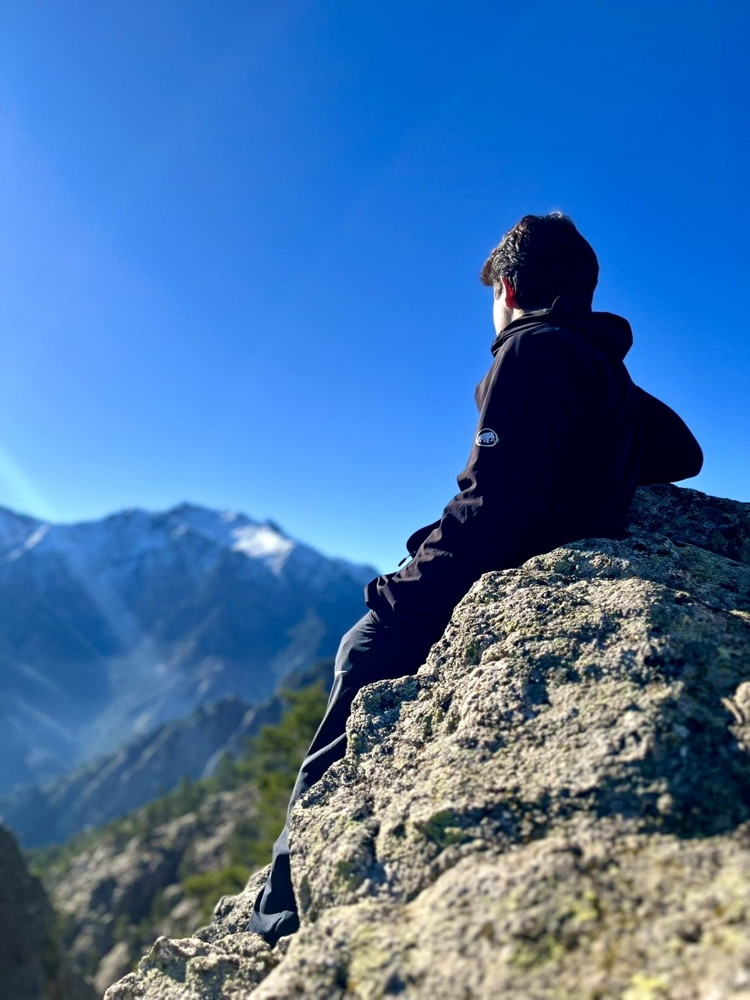

8+
PROJETS RÉALISÉS

Passionné par le graphisme et la création multimédia, je conçois des visuels impactants et produis des contenus vidéo créatifs.
Je m'appelle Enzo Garcia, étudiant en MMI, passionné par le graphisme et la création multimédia. Je suis à l'aise aussi bien dans la conception visuelle que dans la production et le montage vidéo.
Je développe mes compétences sur Photoshop, Illustrator, Premiere Pro, After Effects, InDesign et Cinema 4D. Je cherche surtout à progresser, apprendre et construire des projets solides.
Brevet des collèges obtenu avec la mention Très Bien.
Baccalauréat Général avec les spécialités Mathématiques et Sciences Économiques et Sociales, ainsi que l’option Cinéma-Audiovisuel.
Formation en cours, développement des compétences en design graphique, production audiovisuelle et création web.
Obsidian Wild est une affiche publicitaire que j’ai réalisée autour d’un parfum fictif, avec l’objectif de créer une identité luxueuse, brute et mystérieuse. J’ai choisi un décor de jungle cinématographique pour évoquer la nature sauvage, puis j’ai mis le flacon au centre comme un “totem” suspendu, afin de renforcer l’idée d’un objet rare et puissant. Le contraste entre le noir métallique du packaging et les verts profonds du paysage guide immédiatement le regard vers le produit, tandis que la typographie blanche et le slogan « L’instinct brut, sculpté pour vous. » viennent installer une ambiance premium et affirmée.
Ce projet est une bannière graphique style anime que j’ai conçue pour créer une identité visuelle forte autour du nom “Yuna”. J’ai travaillé une ambiance néon violet/bleu, avec des effets de lumière, particules et papillons pour donner un rendu dynamique et immersif. La composition met le personnage au centre pour capter l’attention, puis le lettrage 3D brillant vient renforcer le côté signature (lisible et impactant, parfait pour YouTube, Twitch ou réseaux sociaux). L’objectif était d’obtenir un visuel énergique, moderne et mémorable, tout en gardant une cohérence de couleurs et de contraste.
Ce logo a été conçu à partir de la lettre W, représentant Wesouli, le nom du serveur dédié à l’optimisation Windows. Le client étant un grand fan de Werenoi, il souhaitait intégrer un clin d’œil visuel au trident, ce qui a inspiré la forme dynamique et tranchante intégrée au “W”. J’ai travaillé un design minimaliste, moderne et impactant, avec un contraste fort noir/blanc pour assurer une excellente lisibilité et une identité facilement reconnaissable. L’objectif était de créer un symbole à la fois tech, puissant et mémorable, parfaitement adapté à un univers gaming et performance.
Ce projet est une affiche événementielle musicale réalisée autour d’un concert fictif de Werenoi, avec pour objectif de transmettre une ambiance urbaine, intense et percutante. J’ai travaillé une composition en double exposition de scène, combinée à des textures peintes rouge/blanc pour apporter un effet brut et énergique, en lien avec l’univers rap et performance live. La typographie centrale est volontairement forte et contrastée afin de garantir une lecture immédiate des informations clés (concert, date, lieu). L’ensemble vise à créer un visuel impactant, moderne et immersif, capable de capter l’attention sur les réseaux sociaux ou en affichage urbain.

Ce projet est une bannière graphique anime réalisée autour du pseudo “Tenzey”, avec pour objectif de créer une identité visuelle puissante, dynamique et spectaculaire. J’ai travaillé une palette dominante bleu électrique et violet, associée à des effets de lumière, particules et glow pour renforcer l’aspect énergétique et immersif. La typographie centrale, en style 3D lumineux, sert de point focal et permet une lecture immédiate du nom, idéale pour une utilisation sur YouTube, Twitch ou Discord. La composition mélange personnages et effets visuels afin de transmettre une ambiance intense, épique et moderne, tout en conservant une forte cohérence graphique.
Ce projet est un court-métrage de 6 minutes réalisé en Terminale dans le cadre de l’option Cinéma-Audiovisuel. Il met en avant le travail de réalisation, de tournage, de storytelling et de montage, avec une attention particulière portée à la narration et au rythme des scènes. Ce projet m’a permis de développer mes compétences en mise en scène, cadrage, organisation de tournage et montage vidéo, tout en découvrant les exigences de la production audiovisuelle.
Ce projet est un montage highlight intensif réalisé pour démontrer un haut niveau de maîtrise des effets visuels et du compositing sur After Effects. Pour une vidéo finale d’environ 1 minute 20, près de 48 heures de travail ont été nécessaires afin de concevoir et intégrer des effets complexes image par image.
Ce projet est une vidéo humoristique réalisée sur GTA RP (FiveM), dans laquelle, avec mon groupe, nous mettons en scène une série de situations absurdes et décalées afin de créer un contenu volontairement chaotique et divertissant.
Vous avez un projet en tête ? N'hésitez pas à me contacter pour discuter de vos idées et voir comment je peux vous aider à les concrétiser.
Je suis actuellement disponible pour des projets freelance, des stages et des opportunités de collaboration.
ME CONTACTER